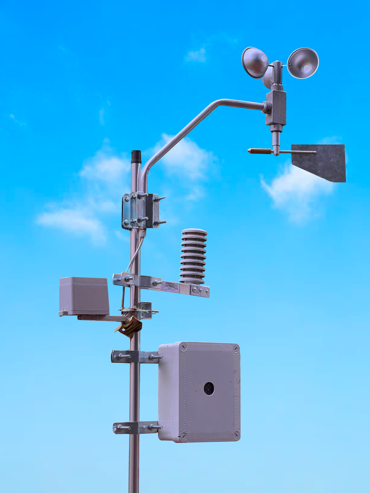

Progetto
Osserviamo ora il progetto complessivo

Notiamo dei sensori che, tramite una rete, comunicano con un server database e un server web.
Tramite questi server i client faranno accesso ai dati rilevati dai sensori.
Più precisamente i sensori comunicano con un computer (un raspberry) che poi si occuperà del trasferimento di dati tramite rete al server database.
Il server web poi si occuperà di prelevare i dati dal database e di mostrarli al client.
Sensori

Rain Gauge
Pluviometro, non ha un tetto per proteggerlo dall'acqua ma ha un imbuto per raccoglierla.
Temperature and Umidity
Contenitore che protegge dei sensori sensibili ai raggi del sole; è composto da piatti impilati in modo da far passare l'aria. L'umidità è misurata da un igrometro, che ha bisogno di un circuito (che va protetto dai raggi del sole), stessa cosa per il termometro.
Wind Sensor
Direzione e intensità del vento
Barometric Pressure
Misura la pressione dell'aria per capire l'arrivo del maltempo
Considerazioni
Abbiamo quindi un totale di 6 sensori.
C'è un host (il raspberry) che legge i dati dei sensori e tramite rete trasmette i dati al server database.
Stazione Meteo
Questa è la stazione meteo. I punti di interesse sono cliccabili per vari approfondimenti.
